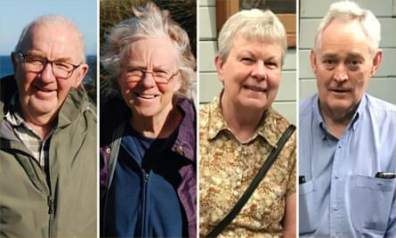

A jury has found Erin Patterson guilty of murdering three relatives and attempting to murder a fourth with a deadly beef wellington lunch almost two years ago.
As the trial entered its 11th week, a Victorian supreme court jury convicted Patterson of murdering her estranged husband’s parents, Don and Gail Patterson, and his aunt, Heather Wilkinson. The 12-person jury also found Patterson guilty of attempting to murder Heather’s husband, Ian Wilkinson , who survived the lunch after spending weeks in hospital.
As the verdicts were read out, Patterson did not drop her gaze from the jury. She looked ahead, calmly.
No members of the Patterson or Wilkinson families attended court for the verdicts.

Illustration: Guardian Design
Police charged Patterson in November 2023 over the lethal lunch she hosted at her home in Leongatha, in south-eastern Victoria’s Gippsland region, more than three months earlier on 29 July.
All four guests were diagnosed with amanita mushroom poisoning, caused by consuming poisonous death cap mushrooms, the trial heard.
Gail and Heather died on 4 August. Don died the following day on 5 August. Ian, the pastor of the Korumburra Baptist church, recovered and was discharged from hospital to a rehabilitation ward in September 2023.
The prosecutor, Nanette Rogers SC, had alleged Patterson invited the four elderly guests to her home on the “pretence” she had cancer and needed advice about how to break the news to her children.
Patterson’s estranged husband, Simon, was also invited to the lunch but cancelled the day before, messaging to say he felt “too uncomfortable” to attend, the trial heard. The prosecution did not allege a motive.
From left to right: Don Patterson, Gail Patterson, Heather Wilkinson and Ian Wilkinson, who was the sole surviving guest of the 2023 lunch.Composite: Supplied/facebook
Patterson’s defence barrister, Colin Mandy SC, told the trial the incident was a “tragedy and terrible accident” . He said his client never intended to harm her guests.
Mandy told the court Patterson panicked and lied to police about having never foraged for mushrooms or owning a food dehydrator because she was overwhelmed after the lunch.
The defence agreed it was not in dispute Patterson had never been diagnosed with cancer.
The jury, made up of seven men and five women, started deliberations on 30 June, and had to reach unanimous verdicts on all four charges.
Beale, who presided over the trial at the Latrobe Valley law courts in Morwell, made multiple comments throughout the case about the extraordinary media coverage it had received.
In his final directions to the jury , he urged them to continue to ignore this coverage while considering their verdicts.
“This case has attracted unprecedented media attention and excited much public comment,” Beale said.
“If any of that has reached your eyes or ears, or does so in the coming days or during your deliberations, you must be particularly careful not to let it influence you in any way.”
He emphasised to the jury that they must not “guess” about what the evidence heard in the case from more than 50 witnesses meant, but could draw reasonable conclusions from it in order to reach a verdict.
“Before you may return a verdict of guilty, the prosecution must satisfy you that the accused is guilty of the charges in question. Erin Patterson does not have to prove anything,” Beale said.
“It is not enough for the prosecution to prove that the accused is probably guilty or likely to be guilty. As I have told you it’s almost impossible to prove anything with absolute certainty when reconstructing past events, and the prosecution does not have to do so.
“A reasonable doubt is not an imaginary or fanciful doubt or an unrealistic possibility.”